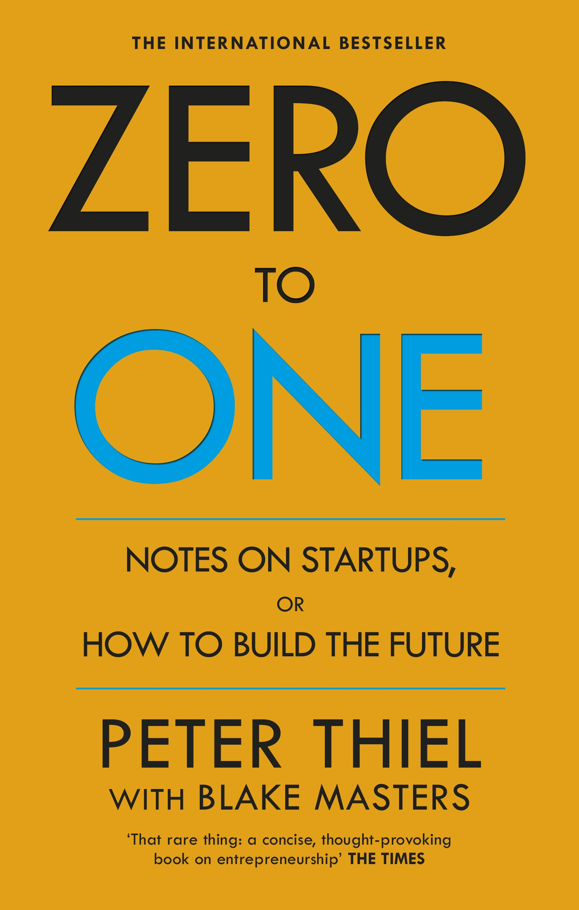

Jakten efter det perfekta bolaget
Facebook grundades 2004 och blev snabbt det mest populära sociala nätverket i hela världen. Marknaden växte väldigt snabbt då princip hela världen hade ett behov som kunde mötas av Facebook. Konkurrensen var förstås benhård och en drös med bolag gav sig in i kampen, men med ett bolag som Facebook med deras enorma nätverk lyckdes de ta grepp om marknaden för att helt ta över den genom förvärvet av Instagram år 2011. Det är en fantastisk historia om ett företag som hela tiden varit stor inom sin nischade marknad som i sin tur har varit ganska liten för att över tid bli enorm. Facebook, numera Meta, har hela tiden varit en stor fisk inom denna marknad och det är ett bra exempel på ett bolag som man bör leta efter.
Stor marknadsandel är något som alla investerare bör leta efter, att ha en stor marknadsandel innebär ofta att det är lättare att få skalfördelar som i sin tur leder till bättre marginaler. Det är ännu bättre om nischen växer och blir större varje år, då kommer de som blir nya kunder alltid att överväga att köra på den största spelaren eftersom den är mest etablerad och ingen förlorar sitt jobb på att välja den mest etablerad tjänsten på marknaden.
Är man inom en marknad som har en power i sig också, så som skalfördelar, cornered resource eller nätverkseffekter är det ännu bättre. Det innebär att ny omsättning kommer leda till ännu högre marginaler. Bolag som Google/Airbnb/Microsoft har alla lyckats med detta, genom att nå en viss skala och med ett tillräckligt bra produkt har det visat sig vara väldigt svårt att konkurrera med dessa bolag. Stora bolag har även blivit stora för en anledning och den anledning är ofta att det bolaget är det bästa inom sin nisch. Det ger trygghet och visibilitet framåt att bolaget troligtvis kommer att behålla eller öka sin marknadsandel eftersom det är just bäst. Förstås är det viss risk med att “äga en marknad”, så som Google gjort med sökmotorer under lång tid, men det brukar gå okej givet att det är det bästa för kunderna. Bra bolag brukar även förbli bra bolag.

På andra sidan spektrumet av bolag har vi något helt annat: Bolag som är små på sin marknad och slåss mot många andra som också är väldigt duktiga på de som det gör, tänk ett bolag som typ Power/Elgiganten/Teknik magasinet/Webhallen. Det är bolag som säljer elektronik som finns tillgänglig på otroligt många ställen och det är ingen som har en jättestor andel av marknaden utan det är ett par procent av marknaden som dessa behöver slåss om. Det blir inga jättebra marginaler, vissa har till och med gått under pga för dålig lönsamhet, vilket är rimligt att se när det är så tuff konkurrens. Väldigt tråkigt för oss investerare och för alla anställda. Det finns få skalfördelar, ingen cornered resource, ingen nätverkseffekt att tala om, ingen eller låg lojalitet bland kunderna som hela tiden använder sig av prisjämförelser för att få bästa pris på sina produkter. Helt omvänt från vad Meta har lyckats åstadkomma.
Sök efter bolag som är en stor spelare i en liten nisch, helst där nischen växer. Om det finns bra nätverkseffekter, där fler användare skapar mer värde för varje kund, är det också en väldigt bra effekt som inte ska underskattas över tid. Digitala affärsmodeller har detta mer naturligt i sig, det kostar ofta ganska lite att ta in en ny kund, men värde som skapas ökar.
Det kan även vara av intresse att vara i en nisch där marknaden krymper, men det är mycket fixed cost för att ta sig in i marknaden, så det är inte värt för någon annan att försöka att ta sig in. Det blir mer av ett cigar butt case, alltså att man räknar på framtida kassaflöden som i sitt terminal value inte kommer att vara stort alls utan värdet i bolaget ligger i närmaste tiden. Loomis är ett sådant case, cash hantering är otroligt svårt att slå sig in på, mycket fixed cost och de flesta vill bara att det ska förvaltas. Framtiden talar för att det blir mindre cash i världen då digitala betalningar är betydligt smidigare och kostnadseffektiva.
Ett annat exempel är medaljfabriken som Olle Qvarnström (Snåljåpen) driver, det kostar väldigt mycket att köpa in maskinerna som pressar medaljer och det finns ingen marknad för att räkna hem en sådan investering. Om man vill köpa medaljer så gör man det i stor skala via import. Det skapar en cornered resource, ingen annan kan ta den, vilket öppnar för att nischen kan tjäna på den lilla marknaden som finns där. Av den marknaden som är kvar finns det trogna och opriskänsliga kunder som gärna betalar extra för att det är producerat i Sverige till hög kvalité. Lyssna gärna på avsnittet där Olle själv berättar om verksamheten och hur deras marknadsposition är svår att ta sig an.
Nackdelen när marknaden krymper är att det inte går att återinvestera pengarna i den verksamheten, det kapital som är sysselsatt kräver lite underhåll, men det är inte möjligt att investera sig till en större marknad. Det är en kassasflödensmaskin, men i begränsad skala. Det blir ingen ränta på ränta effekt givet att du inte kan återinvestera pengarna någon annanstans där pengarna kan göra mer nytta över tid.
Att vara en stor fisk i en liten damm innebär också att det är en hel del fördelar om man vill förvärva andra. Det är lätt att sluka i sig mindre spelare jämfört med att vara en liten fisk som äter upp en annan liten fisk. För ett litet bolag som gör förfärv kan det bli väldigt transformativt att göra ett förvärv av ett bolag som är en stor andel av den storleken som bolag är själva. Det kräver mycket av mangagement att man ska lyckats med en sådan resa och det är inte så vanliga att en ledare i ett litet bolag lyckats med att slå samman två organisationer, det leder ofta till att nyckelpersoner lämnar som i sin tur skapar osäkerhet. Precis som Kvalitésaktiepodden brukar prata om är det ofta inte värt att vara med i ett transformativt förvärv. Infracom är ett bra exempel som köpte Connect som i sin tur blev en härva då det bolaget var lika stort som sig själva. Infracom har sedan dess handlas till en låg multipel och förtroendet är lågt för ledningen.
Jämför det med att vara en stor fisk, säg att du är Adobe och du bestämmer dig för att köpa en annan liten/medelstor fisk som kallas för Figma. Inte bara är det att du tar bort en konkurrent från marknaden som potentiellt kunde ha eliminerat dig, utan du har även lyckats få tillbaka de kreativa användare som lämnat Adobe för Figma. Det gör att den vallgraven som man hade tidigare blir ännu svårare för andra att penetrera vilket säkrar framtida kassaflöden långt in i framtiden.
Att vara störst i sin marknad innebär att man kan göra roll-up förvärv, du köper konkurrenter som du i sin tur kan rulla in i din egen verksamhet och börja sälja deras produkter genom dina egna kanaler vilket gör att värdet på bolag som du förvärvare är värt mer för dig än vad det är för någon som inte har tillgång till de kanalerna. Det kan ske genom sales kanalen, att befintliga produkter trycks ut på nya marknader genom det förvärvade bolaget eller att det förvärvade bolagets produkter kommer att säljas vidare genom befintliga säljkanaler. Assa Abloy har varit ett helt otroligt bra bolag på detta över väldigt lång tid, det verkar fungera bäst när det är en fragmenterad marknad och speciellt där det har varit bolag som har grundats för ca 30 år sedan där det är dags för ett generationskifte, men intresset från den yngre generationen i familjbolaget är för lågt. Då går bolaget ofta och slår sig samman med en konkurrent som ofta kan vara den största.
Fördelen med roll-up förvärv är att det är okej om 70% av förvärven blir bra, du har helt enkelt råd med att vissa inte blir så bra. Med ett transformativt förvärv måste det blir bra, annars riskerar båda bolagen att gå under i när det nya bolagen nu behöver gå igenom en turnaround med lägre förtroende, högre kapitalkostnader, tappad momentum samt risk att förlora nyckelkompetens. Att göra en turnaround kräver även mycket mer av ledning och styrelse.
Det som är riskabelt med att vara störst i sin marknad är att det kan komma transformativ teknik som kan vända på reglerna upp och ner, där en ny process gör det möjligt att göra det som bolaget gjort tidigare fast för en billigare/smidigare upplevelse för kunderna. Digitala betalningar är en sådan, cash är bra, men det är också bökigt att gå runt med cash i plånboken jämfört med att blippa sin telefon. Det är bra för företag som Visa och Mastercard, men det är inte så bra för bolag som Loomis. Ett bra sätt att skydda sig mot transformativ teknik är att själv vara med och forska på den nya tekniken och samtidigt vara snabbt på att köpa de bolag som visar sig ha en potent produkt.

Gillar du detta inlägg? Jag kan varmt reka att läsa Zero to One, den täcker dessa tankar och går på djupet.